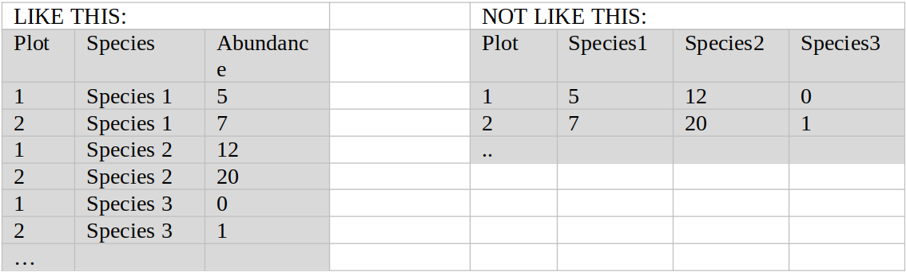

Data formatting¶
Before uploading to the COAT Data Portal, datasets need to be formatted according to formatting rules defined for the COAT project.
For each dataset in the COAT Data Portal there are some mandatory requirements:
The datasets need to be associated to a sampling protocol (added as a link in metadata)
The dataset need to include a coordinates file with coordinates of all sampling sites in a standardized format.
Each dataset can also include optional additional information such as auxiliary or readme files. An example of a non-mandatory auxiliary file is a file containing a set of station-level variables measured at each plot/site/transect/quadrat. Typically, these variables would be such as terrain characteristics, habitat classes, land cover etc. Another example is a file defining the first and the last year when given sampling sites have been included in the study design. This is useful when the study design has changed over time.
tabular data¶
Most of COATs data are in tabular format, stored in suitable text file formats (.txt/.csv/.asc). We divide tabular data into two types, and a generic format was defined for each of these two types:
Plot-based data: The sampling units are fixed in space (e.g. a plot, quadrat, transect, etc.) and the data contain1-n variables measured on each of these individuals
Individual-based data: the sampling units are individuals not fixed in space (e.g. animals) and the data contain 1-n variables measured on each of these individuals.
What is a dataset?¶
A dataset in the COAT data portal is a parcel of data, organized as a collection of files which are all represented by the same set of metadata.
If the collection of files you have at hand cannot be represented by the same set of metadata, you should consider splitting them into several collections (i.e.several data sets).
Each dataset in the portal is allocated a unique identifier (DOI), and all search capabilities are on the metadata level of the data sets (see further info below).
A dataset could typically be X number of files containing measurements of the same variables in X number of years. Or Y number of files containing measurements of the same variables in Y number of localities.
Dataset naming¶
The name of a dataset (e.g. a collection of files, see above) should always start with a standardized prefix indicating which region (Svalbard, Varanger) and which monitoring target they refer to.
After the prefix the data set owner can define a name that is informative of the content.
For instance, all data sets that describe the monitoring target rodents in Varanger are given the prefix ‘V_rodents_’ while all data sets that describe the monitoring target arctic fox on Svalbard are given the prefix ‘S_arcticfox_’.
A data set from Varanger which describes the monitoring target forest and contains data on tree structure could hence be called ‘V_forest_treestructure’ or possibly ‘V_forest_treestructure_Polmak’ if there is a need to distinguish between this data set and another from a different region or design.
Below is a complete list of monitoring targets (and prefixes).
Target |
Locality |
Type |
Datasetname_prefix |
|---|---|---|---|
Vegetation |
Svalbard, Varanger |
Biotic |
S_vegetation_/V_vegetation_ |
Ungulates |
Svalbard, Varanger |
Biotic |
S_ungulates_/V_ungulates_ |
Ptarmigan |
Svalbard, Varanger |
Biotic |
S_ptarmigan_/V_ptarmigan_ |
Arctic fox |
Svalbard, Varanger |
Biotic |
S_arcticfox_/V_arcticfox_ |
Red Fox |
Varanger |
Biotic |
V_redfox_ |
Geese |
Svalbard |
Biotic |
S_geese_ |
Rodents |
Varanger |
Biotic |
V_rodents_ |
Insect defoliators |
Varanger |
Biotic |
V_insect_defoliators_ |
Insect communities |
Varanger |
Biotic |
V_insect_commun_ |
Specialist predators (rodents) |
Varanger |
Biotic |
V_rodent_special_predators |
Specialist predators (ptarmigan) |
Varanger |
Biotic |
V_ptarmigan_special_predators |
Generalist predators |
Varanger |
Biotic |
V_general_predators_ |
Bird communities |
Varanger |
Biotic |
V_bird_commun_ |
Tall shrub |
Varanger |
Biotic |
V_tall_shrub_ |
Meadow |
Varanger |
Biotic |
V_meadow_ |
Forest |
Varanger |
Biotic |
V_forest_ |
Heath |
Varanger |
Biotic |
V_heath_ |
Forest_understorey |
Varanger |
Biotic |
V_forest_understorey_ |
Snowbed |
Varanger |
Biotic |
V_snowbed_ |
Timing of snow melt |
Svalbard, Varanger |
Climatic |
S_timing_snowmelt_/V_timing_snowmelt_ |
Snow depth |
Svalbard, Varanger |
Climatic |
_snowdepth_/V_snowdepth_ |
Snow structure |
Svalbard, Varanger |
Climatic |
S_snowstructure_/V_snowstructure_ |
Ground ice |
Svalbard, Varanger |
Climatic |
S_groundice_/V_groundice_ |
Timing of icing |
Svalbard, Varanger |
Climatic |
S_timing_icing_/V_timing_icing_ |
Weather |
Svalbard, Varanger |
Climatic |
S_weather_/V_weather_ |
Energy Balance |
Svalbard, Varanger |
Climatic |
S_energy_balance_/V_energy_balance_ |
File naming¶
The naming of the files within a dataset should inform about their content. However, there are no fixed naming conventions, and it is up to each data owner to ensure that file naming is consistent and informative within each data set. For some datasets it might be relevant to include locality names while for others it will be more relevant to name the file according to main variable and year.
The only file where there is a strict naming convention is the mandatory file with plot coordinates. This should be named according to the data set name + ‘coordinates’. Example: for a dataset named ‘V_forest_treestructure’, the coordinate file should be named ‘V_forest_treestructure_coordinates.csv’.
Special characters: avoid special characters (such as ‘()’,’#’,’&’, ‘{}’, ‘:’, ‘;’, ‘*’) in all file names.
Coordinate files¶
All plot-based data sets must be accompanied by a file containing plot coordinates. The files have standard format to facilitate finding data from the same localities from the data portal.
Standard coordinates in COAT are decimal degrees and UTM zone 33. We provide the latter to facilitate the integration with national level map-based data where UTM33 Euref89 is the standard.
For some datasets there might be uncertainties attached to which datum was used. In most COAT relevant cases, any uncertainty as to whether the datum is Euref89 or WGS84 is irrelevant, as the difference is in the order of centimetres. However, if there is uncertainty as to whether the datum is ED50 or Euref89/WGS84, the difference can be substantial. In such cases, the data owner should judge whether this has implications for the use of the data, and specify any uncertainties in the Description field of the metadata. For example:
“Uncertainty related to datum: For the years 2000-present datum is Euref89. For the years preceding 2000, datum is suspected to be ED50, but this is uncertain. The potential displacement of coordinates due to this uncertainty is in the order of XX meters”.
The coordinate file should contain the following five columns in the given order:
[sn_siteID]: this is the waypoint of the plot. Must be the same name as used in the sn_siteID column in the data files (see section on Columns names in data files)
[e_dd]: X coordinate of the plot in longitude decimal degrees (WGS84 unless otherwise stated)
[n_dd]: Y coordinate of the plot in latitude decimal degrees (WGS84 unless otherwise stated)
[e_utm33]: X coordinate of the plot in UTM zone 33 (WGS84 unless otherwise stated)
[n_utm33]: Y coordinate of the plot in UTM zone 33 (WGS84 unless otherwise stated)
Column names in data files¶
As a general rule-of-thumb simple tables in COAT should be formatted in a long format, rather than in a wide format. This makes it easier to combine and plot data in R and facilitates the use of standardized column names.
For instance a dataset with abundances measured on X number of species should have one column indicating species and one column indicating abundance, instead of X columns indicating abundance for species 1..X.
https://www.theanalysisfactor.com/wide-and-long-data/
http://www.cookbook-r.com/Manipulating_data/Converting_data_between_wide_and_long_format/
Standardized column names have been defined to describe the spatial sampling hierarchy, the temporal sampling and the most commonly used value columns.
All column names include a prefix: * sn_(for spatial nested variables) * sc_(for spatial crossed variables) * t_(for temporal variables) * v_(for variables containing other observations)
A complete list of these and a definition for each can be found at Box/COAT/Data Management/Datatypes/Simple tables/Generic format data tables/Simple tables column definitions.xlsx(internal users only). The file also contains information on which standard columns should be included in all datasets.
Spelling and general text formatting in data files¶
Capital letters: used only for NA, not for any other purpose
Scandinavian letters: replace Scandinavian letters ø, æ, å with ‘o’, ‘ae’, ‘aa’.
Special characters: avoid special characters (such as ‘()’,’#’,’&’, ‘{}’, ‘:’, ‘;’, ‘*’) in all text columns.
Separating words in ‘notes’/’comments’ columns: use space, underscore or comma.
Missing data in files¶
Always indicate missing data, also in text columns, by NA (capital letters only). All observations that have no comments, should have value “NA” in the comment column.
Date formats in data files¶
Dates should always be given as YYYY-MM-DD for example 2018-12-31.
Locality names in data files¶
All locality names in files should conform to the standard lists of locality names found in Box/COAT/Data Management/Taxonomy/Locality/Locality taxonomy COAT.xlsx (internal users only). The list defines the spelling of all place names found at the top-four levels of the spatial hierarchy:
sn_region > sn_subregion > sn_locality > sn_section
Note that the names confirm to the general rules of text formatting (no capital letters, no Scandinavian letters etc). Anyone in need ofthe proper spelling (for instance for plotting purposes) can consult the sheet “correct spelling” in the same file.